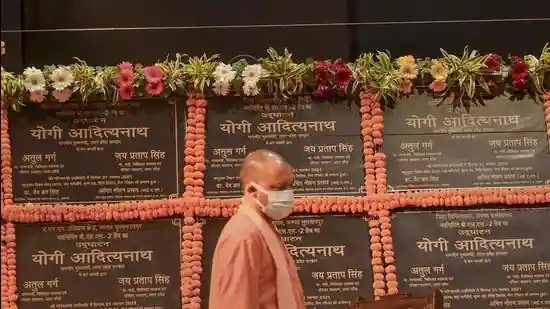

Uttar Pradesh on course to becoming medical hub: Yogi Adityanath
Uttar Pradesh on course to becoming medical hub: Yogi Adityanath
Yogi Adityanath gives appointment letters to 310 specialist doctors, inaugurates 15 BSL 2 laboratories.

Uttar Pradesh chief minister Yogi Adityanath arrives to inaugurate the Bio-Safety Level (BSL) labs at a function at Lok Bhavan in Lucknow on Sunday. (PTI Photo)
Published on Nov 21, 2021 06:34 PM IST